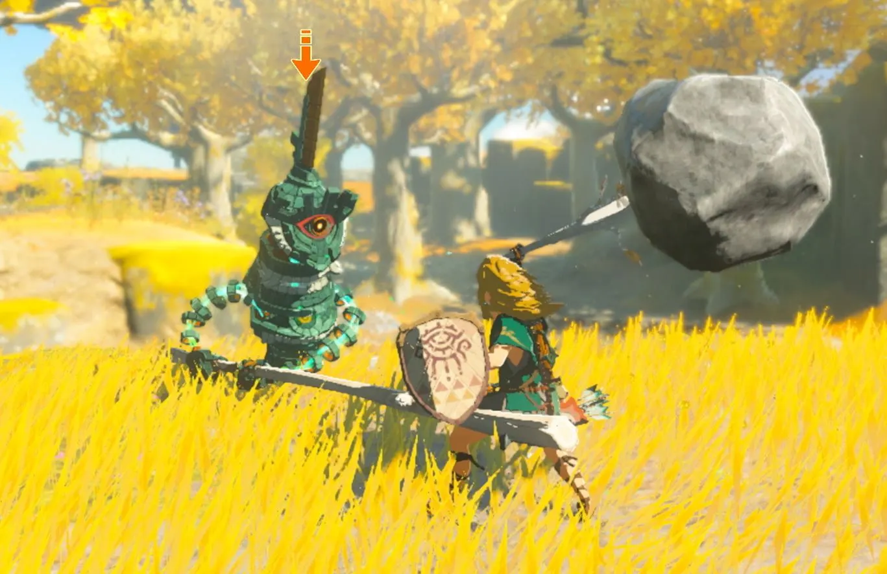
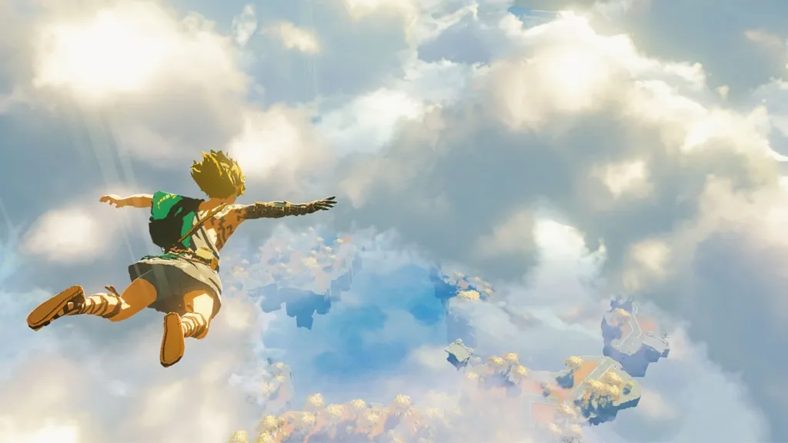
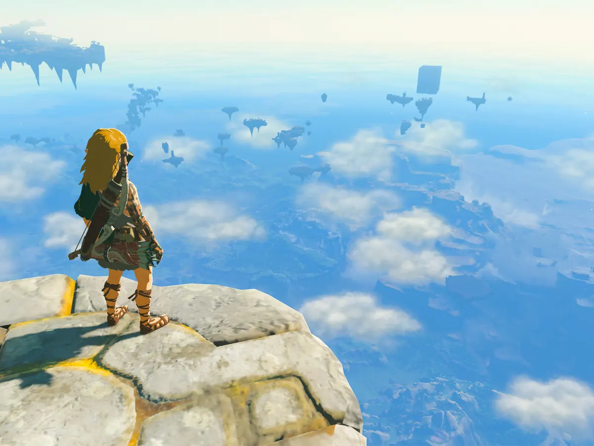

Tras los acontecimientos de The Legend of Zelda: Breath of the Wild, la princesa Zelda junto a Link exploran un templo subterráneo en el que descubren que se encuentra un cadáver momificado.Después de que el cadáver tome vida y se levante, logrando elevar el castillo de Hyrule, Link deberá encontrar a la princesa Zelda y así salvar al reino de Hyrule de las garras de Ganondorf.


